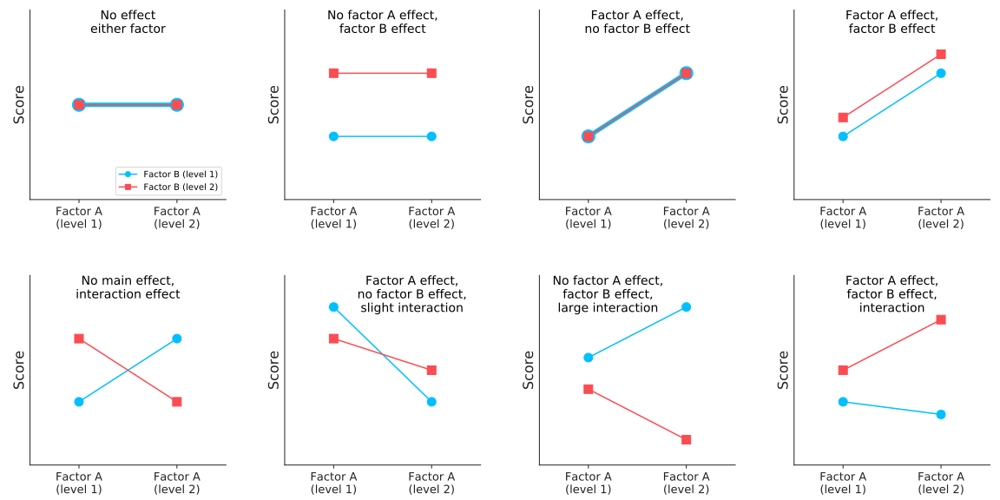

Repeated-Measures ANOVA
Two-Way ANOVA Introduction
Repeated-Measures ANOVA
Two-Way ANOVA Introduction
Comparing multiple quantitative groups (multiple means)
One-way ANOVA
ANOVA Terminology:
ANOVA relies on the study of the different aspects of variability in a dataset to compare two or more quantitative groups with each other.
$F=\frac{\textrm{Mean SS}_{Group}}{\textrm{Mean SS}_{Error}}=\frac{ \frac{\textrm{SS}_{Group}}{(k-1)} }{ \frac{\textrm{SS}_{Error}}{(n-k)} }$
The $F$-statistic is just like any other statistic of interest, we can assess a p-value or confidence intervals.
Need to follow up with post hoc tests.
Don't forget to correct for multiple-testing errors!
Total Variability
Variability Between Groups
Variability Of "Errors" or "Effects"
$$\sum_{i=1}^{n}(x_{i}-\hat{x})^2$$
$$\sum_{g=1}^{k}n_{g}(\bar{x}_{g}-\hat{x})^2$$
$$\sum_{g=1}^{k}\sum_{i=1}^{n_g}(x_{gi}-\bar{x}_{g})^2$$
Measuring the same subject over time or condition?
Use the Repeated Measures version:
$$\sum_{i=1}^{n}(x_{i}-\hat{x})^2$$
$$\sum_{g=1}^{k}n_{g}(\bar{x}_{g}-\hat{x})^2$$
$$\sum_{g=1}^{k}\sum_{i=1}^{n_g}(x_{gi}-\bar{x}_{g})^2 - \class{pop}{\sum_{s=1}^{S}k_s(\bar{x}_s-\hat{x})^2}$$
$\hat{x}$: Grand Mean; $\bar{x}_g$: Group Mean; $\bar{x}_s$: Subject Mean; $n$: Total number of measurements; $n_g$: Number in $g^{\text{th}}$ group; $k_s$: Number of conditions or time-points in $s^{\text{th}}$ subject.
Statistic:
$$\mathcal{F}=\frac{\color{orange}{SS_{between}}}{\color{lightblue} {SS_{Within}}}=\frac{\color{orange}{\partial^2(fit,null)}} {\color{lightblue}{\partial^2(fit,data)}}$$
Effect Size:
$$R^2=\frac{\color{orange}{\partial^2(fit,null)}}{\color{seagreen}{\partial^2(data,null)}}$$
Statistic:
$$\mathcal{F}=\frac{\color{orange}{\partial^2(fit,null)}}{\color{lightblue}{\partial^2(fit,\color{purple}{reduced})}}$$
Effect Size:
$$\eta^2_{p}=\frac{\color{orange}{\partial^2(fit,null)}}{\color{purple}{\partial^2(reduced,null)}}=\frac{SS_{Between}}{SS_{Total}}$$
Repeated measures design uses the same subjects with every condition of the research, including the control.
In this design, data for a particular dependent variable (factor) are collected more than once (different levels) on the same observational units.

Investigating changes in mean scores over three or more time points:
You want to study the effect of a 6-month exercise training program on blood pressure and want to measure blood pressure at 3 separate time points (pre-, midway and post-exercise intervention), which would allow you to develop a time-course for any exercise effect.
Investigating differences in mean scores under three or more different conditions:
You might get the same subjects to eat different types of cake (chocolate, caramel and lemon) and rate each one for taste, rather than having different people taste each different cake.
Note: The repeated measures ANOVA will usually gives you more statistical power since the within-group variation, which is a source of measurement errors, will be identified and excluded from the analysis.
Performing a repeated measures ANOVA allows to account for individual differences in baselines of the participants of the study.
Consider a drug trial, in which participants have individual differences that impact the detectable effect of the drug (e.g.: blood pressure, age, gender).
Example:
We have measured the performance scores for a memorization task of a group of subjects in different conditions of noise.
Same subjects over all conditions
Applying a repeated measure ANOVA to analyze the data will allow us to account for individual inner ability for memorization, and isolate the effect of the different levels of the factor.
One way ANOVA:
$SS_{Total}=\sum_{i=1}^{n}(x_{i}-\hat{x})^2$
$SS_{Groups}=\sum_{g=1}^{k}n_{g}(\bar{x}_{g}-\hat{x})^2$
$SS_{Within}=\sum_{g=1}^{k}\sum_{i=1}^{n_g}(x_{gi}-\bar{x}_{g})^2$
Repeated measures ANOVA:
$SS_{Subject}=\sum_{s=1}^{S}k_s(\bar{x}_s-\hat{x})^2$
$SS_{Error} = SS_{Within}-SS_{Subject}$
$k$: number of levels for the factor
Now, we're not interested in how the scores differ between subjects. We therefore "correct" for this variability.
Note the degrees of freedom go from $(n - k)$ to $(s - 1)(k - 1)$ for our Mean Squared Error term.
Like One-Way ANOVA, if we get a significant F-statistic, we follow up with post hoc testing.
One-Way ANOVA considers multiple groups belonging to a single categorical family called a factor level, i.e. sandwiches, treatment types, etc.
$$\mathcal{F}=\frac{\color{orange}{SS_{between}}}{\color{lightblue}{SS_{Within}}}$$
Just as we discussed with before $\sim$ after in two-group NHST, ANOVA has special methods for dealing with repeatedly measuring from a single subject. It takes the form of:
$$\mathcal{F}=\frac{\color{orange}{SS_{between}}}{\color{lightblue}{(SS_{Within}- SS_{random})}}=\frac{SS_{between.timepoints}}{SS_{fixed}}$$
We aren't limited to one level (plus time) and can model multiple factors, though it starts getting complicated because we have new kinds of terms to discuss called interactions. Note that each new factor level will get its own $\mathcal{F}$-statistic.
$$\mathcal{F}=\frac{\{ SS_{b.group1},\, SS_{b.group2},\, \ldots ,\, SS_{b.groupN},\, \{ SS_{\color{orange}{interactions}}\} \} } {SS_{Within}}$$
Just like in the One-Way approach, we now have to consider the effects of time and remove the random effects, i.e. the within subject variation.
$$\mathcal{F}=\frac{\{ SS_{b.time},\, SS_{b.group2},\, \ldots ,\, SS_{b.groupN},\, \{ SS_{\color{orange}{interactions}}\} \} } {SS_{Within}-SS_{random}}$$
Note: As we add more and more factors, we stop calling it ANOVA and just say "Factor Analysis", and it starts taking on a new shape.
A two-way ANOVA allows us to investigate the (individual & combined) effects of two factors (explanatory/independent variables) on a quantitative variable (response).
In our memorization performance and noise level experiment, we could for example investigate if gender (or the combine effect of gender and noise) also affects our response variable.
The results from a two way ANOVA will give information about the main effect and the interaction effect:
We can think of two-way ANOVA as a nesting of one-way ANOVAs.
That is, we end up with, essentially, three one-way ANOVAs:
The computation of the $SS$ terms for each factor and the error terms are virtually similar than for a one-way ANOVA.
The interaction variability refers to the degree to which the combined effect of two independent variables on the dependent variable differs from what would be expected based on their individual effects alone.
Total Variability
Factor A Variability
Factor B Variability
Variability Of $A\star B$
Variability Due To Error
Understanding the pattern in an interaction plot:
An interaction is usually described in terms of the simple main effects that make it up. A "main effect" is the effect of one of your independent variables on the dependent variable, ignoring the effects of all other independent variables.


Depending on the number of levels in each of your factors, the interaction plots might be more or less easy to interpret ...
How does the assumption of homogeneity of variances impact the interpretation of ANOVA results?
Discuss what might happen if this assumption is violated, and how might such a violation affect the validity of the ANOVA test conclusions?
Homogeneity of variances (equal variances) across groups is essential for the validity of ANOVA because it ensures the F-ratio remains an accurate measure of group differences. When variances are equal, the pooled variance estimate provides a fair comparison between group means. If this assumption is violated, particularly in cases of unequal sample sizes, ANOVA becomes prone to type I and type II errors. Specifically, the test may falsely detect differences when none exist or fail to detect real differences, especially if variances are higher in groups with smaller sample sizes. Violations can also lead to biased estimates, making the ANOVA conclusions unreliable.
Note: In the case of an unbalanced design (or unequal variances), you can use Welch's ANOVA, or another non-parametric test like the Kruskal-Wallis test or my favorite: bootstrapping!
How does the F-statistic used in ANOVA compare conceptually to the t and z statistics used in other types of hypothesis testing
Consider how each of these statistics relates to their respective null and sampling distributions, and what they indicate about the data relative to the null hypothesis.
F-statistic
t-statistic
z-statistic
Under what circumstances might you choose to use repeated measures ANOVA instead of one-way ANOVA
Consider the types of research questions that each method is best suited to address and the data characteristics required for each.
Repeated measures ANOVA is more appropriate when the same subjects are measured multiple times under different conditions. This method accounts for within-subject variability and is more powerful for detecting differences when conditions affect the same subjects. One-way ANOVA is used when different subjects are measured under similar conditions but only once.